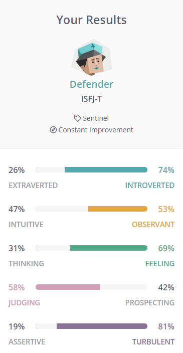

Personal Profile
16 Personalities Test
The results of 16 personalities tests show I’m a Defender shown as ISFJ-A (Assertive Defender) or ISFJ-T (Turbulent Defender). Please see my results below:
Big Five Personality Test
As my third test, I took the Big Five Personality test from openpsychometrics.org. Please see my results below:

Factor I
Factor I is labelled as Extroversion by the developers of the IPIP-BFFM. Factor I is sometimes given other names, such as Surgency or Positive Emotionality.Individuals who score high on Factor I are outgoing and social. Individuals who score low tend to be shit ins.
Factor II
Factor II is labelled as Emotional Stability. Factor II is often referred to by other names, such as Neruoticisim or Negative Emotionality (in these two cases interpretations are inverted, as Neruoticisim or Negative Emotionality can be thought of as the opposite of Emotional Stability.)
Factor III
Factor III is labelled as Agreeableness A person high in agreeableness is friendly and optimistic. Low scorers are critical as aggressive.
Factor IV
Factor IV is labelled as Conscientiousness. Individuals who score high on this factor are careful and diligent. Lower scorers are impulsive and disorganised.
Factor V
Factor II is labelled as Intellect/Imagination. This factor is also often called Openness to Experience.People who score low tend to be traditional and conventional.
What's Your Learning Style? Test
I then took the “What’s Your Learning Style?” from educationplanner.org. Please see my results below:
- Auditory: 30%
- Visual: 35%
- Tactile: 35%
Visual
As a visual learner, I learn by reading or seeing pictures. I understand and remember things by sight. I can picture what I am learning in my head, and I learn best by using methods that are primarily visual.
Tactile
As a tacile learer, I learn by touching and doing. I understand and remember things through physical movement. I am a "hands-on" learner who prefers to touch, move, build, or draw what you learn, and I tend to learn better when some type of physical activity is involved.
16 Personalities Test Link: www.16personalities.com
Big Five Personality Test Link: https://openpsychometrics.org
What’s Your Learning Style? Test Link: www.educationplanner.org